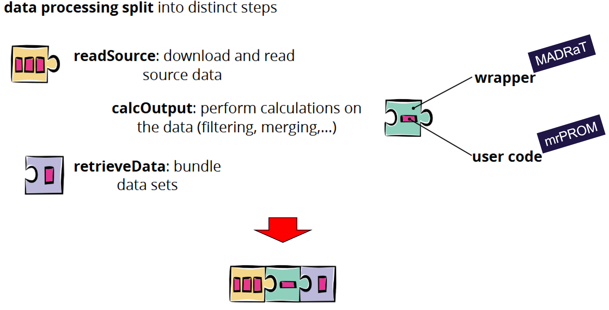
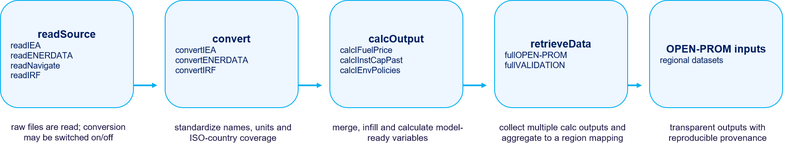
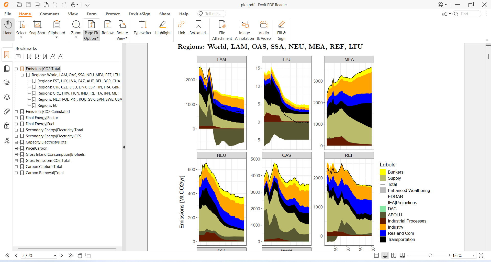
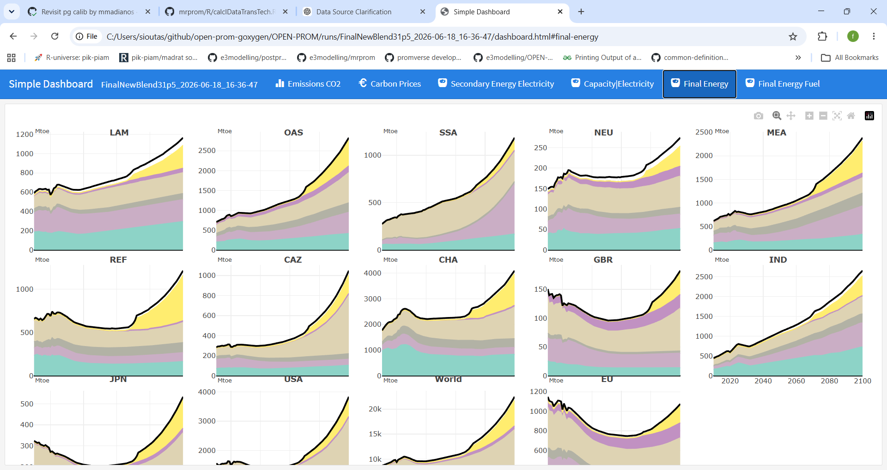
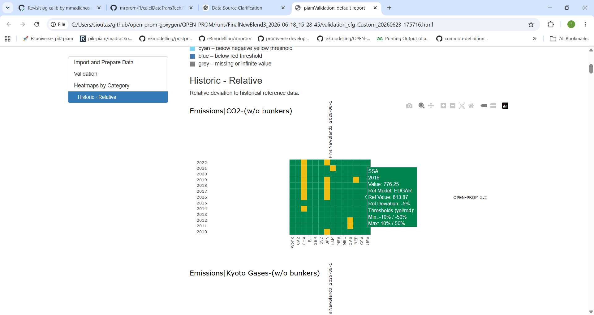

5. Data pipeline and calibration
Note
In brief — This chapter describes how OPEN-PROM’s inputs are assembled and its outputs are reported and validated. Raw data from many external sources are harmonised through the MADRaT-based mrprom pipeline and aggregated to model regions; results are post-processed with postprom into standardised MIF/IAMC outputs and checked with a traffic-light validation system; finally, key model parameters are calibrated so the model reproduces a set of benchmark targets.
5.1. Input data sources and data preparation
The OPEN-PROM modelling framework relies on a wide range of external datasets covering energy balances, technology characteristics, fuel prices, power-generation capacities, environmental policies, macroeconomic indicators, and other sector-specific information. These datasets originate from multiple sources, including international organisations, research projects, and commercial databases.
Examples of data sources currently integrated into the framework are listed below.
Source |
What it provides |
|---|---|
Historical data on energy balances, fuel and electricity prices, energy supply and demand, imports and exports of energy commodities, electricity generation, CO₂ emissions, energy-efficiency indicators, and long-term energy projections and scenarios. |
|
Energy statistics and indicators used primarily for model validation. |
|
Historical data on vehicle stocks, road-network length, road infrastructure, traffic volumes, passenger and freight transport activity, and related transport indicators. |
|
Historical transport activity data and transport technology shares. |
|
Scenario outputs and technology assumptions used for model benchmarking and validation. |
|
Historical carbon-pricing data (carbon taxes and emissions trading systems) and transport indicators. |
|
Installed electricity-capacity data. |
|
International Renewable Energy Agency — installed electricity-capacity data. |
|
Macroeconomic, sectoral, energy, and environmental projections, mainly used for activity data. |
|
Reference and policy-scenario projections for the European energy system, used for target setting. |
|
Emissions Database for Global Atmospheric Research — greenhouse-gas (GHG) and air-pollutant emissions used for model validation. |
The diversity of these sources requires a harmonised and reproducible approach to data preparation. To support this process, OPEN-PROM adopts the MADRaT framework together with the project-specific mrprom package.
Note
MADRaT stands for May All Data be Reproducible and Transparent — a reproducible data-preparation framework.
Traditional spreadsheet-based approaches are often characterised by limited transparency, difficulties in reproducing results, inadequate version control, and increased susceptibility to manual errors. These limitations become particularly important when dealing with large-scale modelling datasets that require regular updates and validation.
MADRaT addresses these challenges by providing a fully reproducible workflow for data preparation, quality assurance, metadata management, and version control. Building upon this infrastructure, mrprom serves as the dedicated OPEN-PROM data pre-processing layer (Fig. 5.1), allowing users to organise and execute all project-specific data-preparation activities in a transparent and standardised manner. Following data import, optional conversion routines harmonise classifications, units, and structures across datasets (Fig. 5.2). The resulting information is standardised at country level, covering up to 249 countries.
Examples of the data-processing routines implemented within the OPEN-PROM framework include the harmonisation of fuel consumption, economic, and transport activity data from multiple international sources. Fuel-consumption data from the IEA World Energy Balances database are processed and mapped to the OPEN-PROM energy forms and demand sectors, ensuring consistency with the model structure.
Additional examples include the development of economic and transport activity indicators using data from GEM-E3, the International Road Federation (IRF), and the World Development Indicators (WDI) database. These datasets are combined, mapped to the OPEN-PROM sectoral classification, and processed to provide consistent activity drivers for projecting future energy demand.
{kind=link}

Fig. 5.1 Sequential stages of data acquisition, processing and dataset assembly in the mrprom framework.
{kind=link}

Fig. 5.2 Workflow for generating OPEN-PROM regional input datasets.
Regional aggregation. In the final stage of the data-preparation workflow, country-level datasets are aggregated into the regional structure adopted by the OPEN-PROM framework. This aggregation is performed automatically using configurable region-mapping files, which assign individual countries to their corresponding model regions. The current OPEN-PROM configuration comprises 39 countries and regions, collectively providing global coverage of all world regions represented in the model. The framework also incorporates caching mechanisms that prevent unnecessary recalculation of datasets that have already been processed, significantly improving computational performance.
See also
mrprom and postprom are maintained as independent repositories: github.com/e3modelling/mrprom and github.com/e3modelling/postprom. For the operational how-to, see Input data.
5.2. Output post-processing
For the reporting of OPEN-PROM results, the postprom framework is used. The postprom repository contains the post-processing framework developed to support the analysis, validation, and dissemination of results generated by the OPEN-PROM modelling platform. Implemented in R, the framework provides a comprehensive set of routines for transforming raw model outputs into structured, analysis-ready datasets and reporting products. It includes functionalities for data extraction, harmonisation, aggregation, quality control, and the calculation of key energy, emissions, and socio-economic indicators.
In addition, postprom provides tools for scenario comparison, trend analysis across regions and sectors, and the production of standardised outputs for project deliverables, publications, and stakeholder communication. The repository forms a key component of the OPEN-PROM ecosystem by facilitating the transition from model outputs to analysis-ready results and supporting the systematic interpretation and visualisation of modelling outcomes.
A central feature of the framework is its validation workflow, which enables the comparison of results from alternative model versions, scenarios, or code branches through standardised reports and indicators. The comparison is based on model outputs converted from GDX files into the Model Intercomparison Format (MIF), providing a common structure for storing and exchanging results. The generated MIF files facilitate the identification of differences arising from model updates, data revisions, or methodological changes, supporting the assessment of proposed developments and helping determine whether changes should be integrated into the main codebase through the GitHub review-and-merge process. In addition, postprom can utilise dedicated reference datasets, which provide benchmark validation data for the evaluation process.
A notable feature of the framework is the implementation of a traffic-light validation system, which provides an intuitive visual representation of validation results through colour-coded indicators. Integrated into automated HTML reports, this functionality allows users to quickly identify areas where model results are consistent with reference data, require further review, or exhibit significant deviations, thereby facilitating quality assurance and the interpretation of validation outcomes.
In addition, postprom supports the generation of standardised outputs in the Integrated Assessment Modelling Consortium (IAMC) format, enabling consistency and interoperability with commonly used tools and databases in the energy and climate modelling community. Model results are converted from GDX files into Model Intercomparison Format (MIF) files, which provide a common structure for storing, exchanging, and analysing scenario data. These MIF files can be explored and visualised through the SCENTool application, offering an interactive environment for reviewing model results, comparing scenarios, and generating graphical analyses. The framework also supports validation against benchmark datasets and results from external models, which are converted into compatible MIF files through dedicated scripts in the mrprom repository. This enables systematic comparisons between OPEN-PROM results and reference datasets using standardised indicators and validation metrics. Furthermore, postprom includes automated reporting functionalities for the production of comprehensive PDF and HTML reports containing key indicators, tables, figures, validation summaries, and traffic-light assessments.
An automated PDF reporting tool (Fig. 5.3) was developed to summarise validation results and facilitate the review of model performance across regions and indicators.
{kind=link}

Fig. 5.3 Automated PDF reporting tool.
An interactive dashboard (Fig. 5.4) was developed for visualisation and analysis of model outputs across regions, sectors, and time horizons.
{kind=link}

Fig. 5.4 Interactive dashboard for exploring model outputs.
Fig. 5.5 presents the validation results for CO₂ emissions (excluding international bunkers) against the reference dataset from EDGAR. For each region and year, the model output is compared with the corresponding EDGAR value, and the relative deviation is calculated.
The colour coding indicates the level of agreement between the model and the reference data:
Green — deviation within ±10% of the reference value.
Yellow — deviation between ±10% and ±50% of the reference value.
Red — deviation greater than ±50% of the reference value.
{kind=link}

Fig. 5.5 Traffic-light validation of CO₂ emissions against the EDGAR reference dataset.
These capabilities support the efficient dissemination of modelling outcomes and ensure transparent, reproducible, and standardised reporting for project deliverables, scientific publications, and stakeholder communication.
5.3. Calibration mechanism
OPEN-PROM is fundamentally driven by economic decision-making mechanisms. As such, non-economic influences — for example infrastructure constraints (e.g. limited availability of electric-vehicle charging stations), political decisions (e.g. nuclear phase-out policies in Europe), or the risk of future technological obsolescence (e.g. internal-combustion-engine vehicles) — are not explicitly modelled as independent drivers within the core decision framework. Instead, these non-economic factors are implicitly incorporated through the calibration of key model parameters. Examples include:
Technology maturity factors, which affect the adoption rate of emerging technologies;
Premature scrapping parameters, which influence the early retirement of existing capital stock;
other behavioural or adjustment parameters that capture deviations from purely cost-optimal adoption pathways.
These parameters are calibrated under a given policy scenario to ensure that the model reproduces a predefined set of benchmark targets. These targets typically include:
fuel-mix shares in the industry and residential sectors;
technology mixes in power generation;
sales shares across transportation technologies.
This calibration approach enables the model to accurately reflect observed or expected system behaviour under current conditions, while maintaining internal consistency. The calibration targets are constructed using a combination of established, peer-reviewed data sources and forward-looking policy assumptions. Key inputs include datasets such as the IEA World Energy Outlook, complemented by other authoritative sources where relevant. In addition, known and already enacted policies, expected to take effect in the coming years, are explicitly incorporated into the target-setting process.
The development of these targets involves a thorough data-analysis phase, during which information from multiple sources is harmonised and reconciled. This process ensures consistency across sectors and datasets, alignment with observed historical trends and credible projections, and feasibility within the structural and behavioural constraints of the model. Attention is given to ensuring that the resulting targets are not only coherent from a data perspective, but also attainable within the model framework, avoiding unrealistic or internally inconsistent outcomes. This rigorous approach to target definition strengthens the credibility of the calibration and ensures that subsequent scenario analysis is grounded in a robust and empirically consistent baseline.
Tip
As a result, OPEN-PROM is particularly suited for comparative scenario analysis, where differences in outcomes can be attributed to variations in assumptions, policies, or external conditions, rather than to structural inconsistencies in the model.
To ensure robustness and avoid overfitting, additional constraints are imposed during calibration. For instance, regularisation techniques are applied to limit excessive year-to-year volatility in calibrated parameters, thereby preserving realistic temporal dynamics and improving model stability.